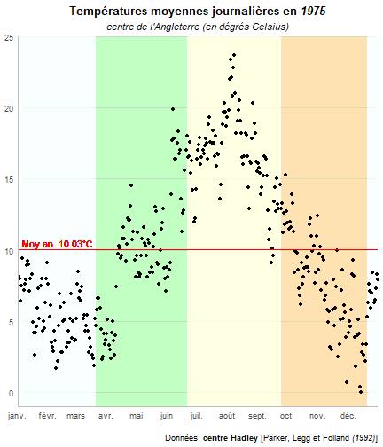
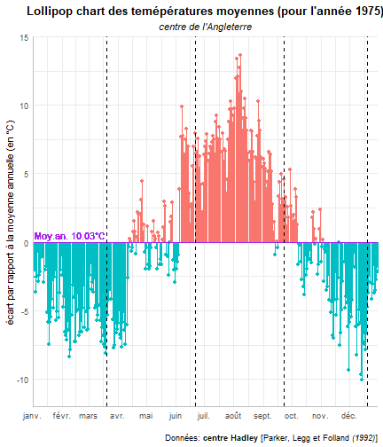

En lisant le mail hebdomadaire de la liste de diffusion R-bloggers, qui est une véritable mine d’or pour qui veut suivre l’actualité de communauté des utilisateurs de notre langage de préféré (nouveaux packages, tutoriels, évènements …), un post particulier à retenu mon attention. L’autrice, Gina Reynolds, y montrait comment il est possible à partir du package flipbookr de réaliser des présentations animées de code (code movies) sans trop d’effort. Il suffit d’un peu de markdown (le langage utilisée pour écrire ce blog), un peu de html et de CSS (mais vraiment pas beaucoup) et quelques nouvelles fonctions introduites par le package. Cela m’a donné envie de me lancer et partager avec vous ma première réalisation.
Pour cela, j’ai repris les données de température du Hadley center sélectionné une année (celle de ma naissance, je suis plus tout jeune…) et créer deux graphes mettant en avant les températures journalières au regard de leur moyenne sur l’année. L’idée était de mettre en relief deux éléments. Tout d’abord, le fait que la moyenne, en tant que centre de gravité d’une distribution, cache par l’agrégation d’information des disparités. Comme je dis souvent à mes étudiants, en choisissant la moyenne comme indicateur représentatif, on s’assure uniquement de se tromper autant dans un sens que dans l’autre ce qui est déjà pas mal. Pour savoir de combien on se trompe en moyenne, il faut examiner l’écart-type de la distribution. Plus il est petit, moins on se trompe… (nous y reviendrons sûrement). Ensuite, on met en relief la nature saisonnière de la série des températures (scoop! il fait plus froid en hivers qu’en été en Angleterre…). Bref, on peut très bien avoir une augmentation de la température moyenne en ayant des hivers plus froids, il suffit d’avoir d’autres saisons plus chaudes. Quand quelqu’un (un ex-président d’un grand pays ou il présentateur TV…) remet en cause le réchauffement climatique parce qu’il fait très froids à un moment donné, d’une part c’est un …, et d’autre part c’est qu’il n’a pas compris de concept de moyenne.
Mais, je m’égare. Voici mon premier flipbook. Il détail comment j’ai construit deux graphes à partir de ces données. Je vous laisse dérouler la présentation en cliquant dedans et en utilisant les flèches directionnelles de votre clavier (droite pour aller en avant - gauche pour aller en arrière - attention c’est sensible).
knitr::include_url("images/test_1.html")Je met à la suite les images des deux graphes réalisés (pour être que vous ne les ratiez pas).


Mon avis après cette première expérience? Le potentiel est là. Le package offre de nombreuses options de personnalisation que je n’est pas encore exploitées. Reste que pour obtenir quelque chose de vraiment spectaculaire, il faut y consacrer du temps. Je conseil d’ailleurs travailler vos présentations partie par partie et de ne regrouper qu’à la fin seulement de manière à limiter les temps de compilation lorsque vous êtes en phase d’exploration/débugage. Concernant le rendu? Si vous voulez utiliser le résultat comme une présentation type “power point” (version .htlm), on a quelque chose de vraiment pas mal. Si vous voulez l’intégrer dans votre blog (comme je l’ai fait), il faut essayer de travailler avec un lecteur plus pratique que celui que j’ai utilisé ici. Je vais chercher… Sinon, il reste l’option de se limiter à des présentations courtes que l’on peut transformer rapidement en gif ou autre format d’animation. Bref à creuser…